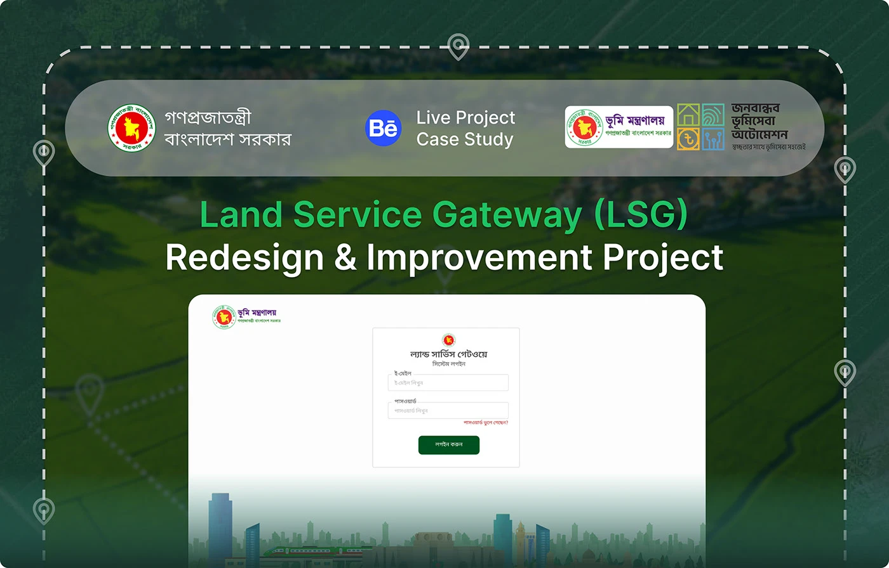
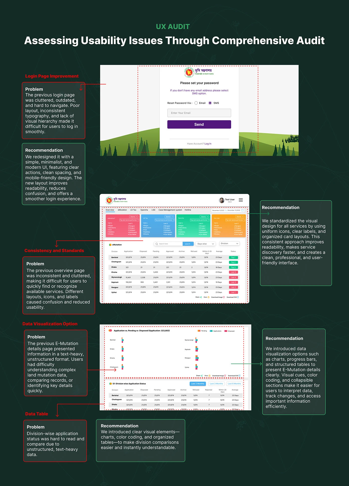
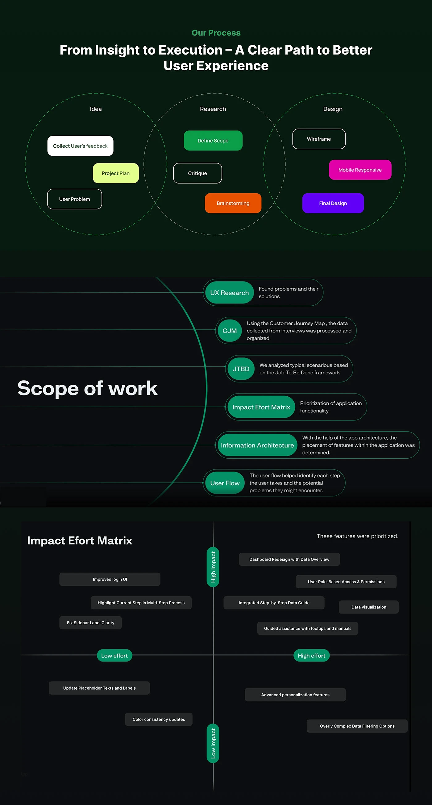
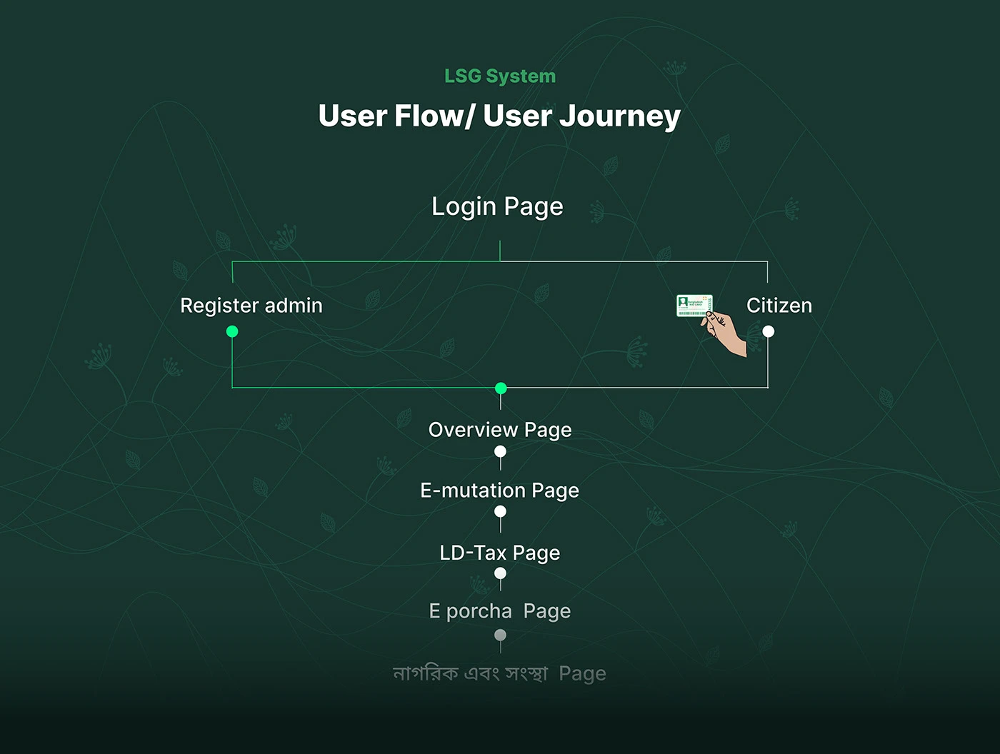
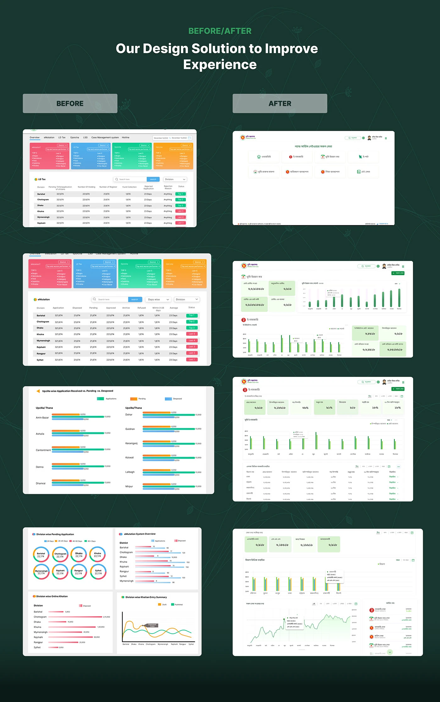
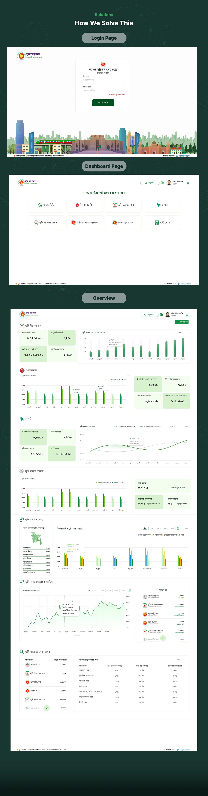
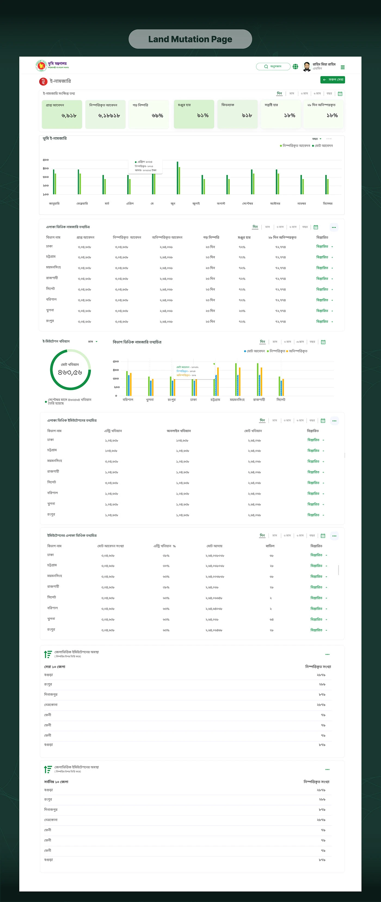
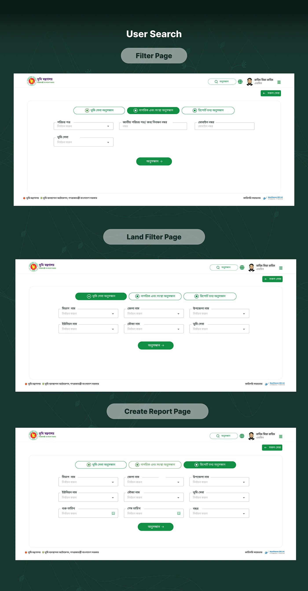

Government · Land services · Mysoft Heaven
Land Service Gateway
Eight of Bangladesh's land services behind one login, with each service's numbers shown as charts and structured tables instead of walls of figures.

- Role
- UI/UX Designer — UX audit, research, flows and UI
- Duration
- 2023–2024
- Platform
- Responsive web system
- Client
- Ministry of Land, Government of Bangladesh
- Tools
- Figma, Photoshop
01The problem
The Land Service Gateway (LSG) is the single entry point to Bangladesh's online land services: e-mutation, land development tax, e-porcha, land revenue cases and more.
The previous version was hard to navigate. Every service was a tab over the same crowded page: four brightly coloured ranking cards, then a dense table. Layouts, icons and labels changed from one service to the next, and the e-mutation data was text-heavy and unstructured, so comparing divisions or spotting a problem meant reading rows of numbers.
02What it had to do
- Make processes transparent — status, required documents and expected completion times, so nobody is left guessing.
- Cut cognitive load — fewer fields, no jargon, and tooltips and help in context.
- Serve every kind of user — rural citizens, older users, government officials and people with disabilities.
- Make services easy to find — search, filters, meaningful icons and clear service descriptions.
03The audit
I audited the live system screen by screen and paired each problem with a recommendation:
- Login — cluttered and dated, with weak hierarchy. Fix: a simple, minimal page with one clear action.
- Consistency and standards — the overview mixed layouts, icons and labels, so services were hard to recognise. Fix: uniform icons, clear labels and one card layout for every service.
- Data visualisation — e-mutation details were text-heavy and unstructured. Fix: charts, progress indicators and structured tables.
- Data tables — division-wise status was hard to read and compare. Fix: colour coding and organised tables that make comparison immediate.

04Deciding what to fix first
Research ran from user feedback through a customer journey map, jobs-to-be-done scenarios, information architecture and user flows. The flow is: log in, land on the overview, then move into e-mutation, LD-tax, e-porcha or the citizen and organisation search.
An impact–effort matrix set the order. Quick wins went first: the new login, highlighting the current step, clearer sidebar labels. Then the larger, high-impact work: a dashboard redesign with a data overview, role-based access, data visualisation, and guided help with tooltips and manuals. Advanced personalisation and complex data filters were left out as high effort for little gain.


05The redesign
Eight services, eight tiles. After login the dashboard shows one tile per service — overview, e-mutation, land development tax, e-porcha, land revenue cases, acquisition management, lease management and API services — each with its own icon. The tab bar and the coloured ranking cards are gone.
An overview that summarises every service. One section per service, each with a few headline tiles and a single chart, followed by service usage across divisions on a map.
Every service page follows one template. Summary tiles on top, a year chart, division tables with a “details” link per row, then the top and bottom ten districts. Learn e-mutation and you can read e-porcha, land cases and LD-tax the same way. Each block has its own time range: day, month, three months, six months, year.
Search in three modes. By land service and location (division down to mouza), by citizen or organisation (ID or mobile number), or by report with a date range.
The same visual system as LD-Tax. Noto Serif Bengali and the flag-green palette, so the gateway matches the LD-Tax system and portal it links to.




06Credit
UX and UI for the Land Ministry's land management automation project, with Mysoft Heaven as technical partner. Published on Behance.
PropSoft.ai
One product across three surfaces — system, app and marketing site.
Say hello
Happy to walk through this project, or any of the others, on a call.